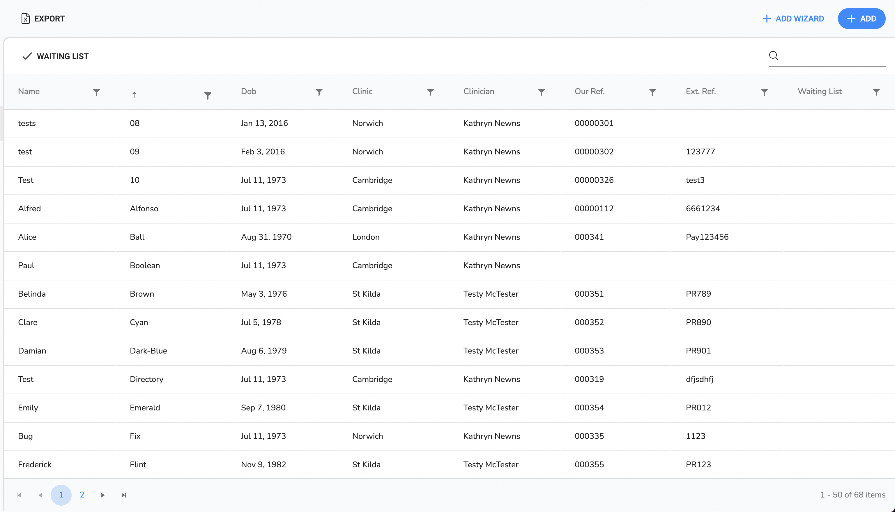

Overview
This section covers the adding and editing of clients, their cases and manage communication with them.
The two initial sections are:
- The clients list, which enables the selection or creation of a client.
- The client details, which enables you access/create a case, edit details and various other options.
List View
The page shows the list of clients in the system. It can be filtered and sorted by using the column headers (See below). Clicking on any of the clients will take you to their client page.
The page is split into five areas:
- ToolBar
- Filter Bar
- Client Table Header
- Client List
- The Navigation Bar
- Toolbar
Toolbar
The toolbar has three buttons:
| Icon | Label | Position | Purpose |
|---|---|---|---|
| Export | Left | Export left This exports the client list to a pdf. | |
| Add Wizard | Right | Add Wizard right This opens the add client wizard. | |
| Add | Right | Add Wizard right This opens the add client wizard. |
Filter Bar
This is a set predefined filters
| Icon | Label | Position | Purpose |
|---|---|---|---|
| Waiting | Left | Filters the clients to show those on the waiting list. | |
| Right | This text field will filter the clients by name and referance. |
Table Header
This contains the header information for the table. It has two features:
| Sort | If you click on any of the headers it will sort to that field. If you click it again it will reverse the sort and clicking it again will remove the sort. |
| Filter | Each field is filterable by clicking on the ‘filter’ icon and a small pop-up will open giving you options to consider. |
Table List
This is the list of available clients. If you wish to open a client click the relevant line.
Navigation Bar
This show the numbers of records on the right and navigation buttons on the left.
Page View
The client view contains all the details for the client. It has two main areas:
- The navigation Sidebar
- The display area
Navigation Side Menu

This is split (in order from top to bottom) into:
- Navigation Buttons
- Action Buttons
- Info
Menu Buttons
When you have selected a menu item then this area will show the details in the display area to the right. On opening the page the client overview is shown.
| Icon | Label | Description |
|---|---|---|
| Overview | Shows client summary information | |
| Details | This is where you can edit the clients full details | |
| Cases | This is where you can view the client cases | |
| Diary | This is where you can view the client’s appointments | |
| Tasks | This is where you can see all tasks relating to the client (If there is a number to the right, the number refers to the number of open tasks) | |
| Quieries | This is where you can see all open queries related to the client (If there is a number to the right,the number refers to all open queries) | |
| Invoices | This is where you can see all invoices related to the client. |
Action Buttons
In Order of Appearance theses are:
| Icon | Label | Description |
|---|---|---|
| Envelope | Envelope Opens the create Correspondence page | |
| Comment | Comment Opens the Call Log Dialog | |
| Template | Fill Word Template Fill Word template |
Info
Shows the next appointment or whether they are on the waiting list.
How to..
Add a Client
- In the Client List view click the
 Add button
Add button - Enter the clients name:
- Enter the title field.
- Enter the forename
- [Required] Enter the last name.
 The title field will set the gender in some cases. e.g. if Mr is selected then the gender will be set to Male.
The title field will set the gender in some cases. e.g. if Mr is selected then the gender will be set to Male. - Enter the gender.
- Enter the Date of Birth.
- [Required] Select the Registered Clinic from the drop down. This would be normally be the clinic closest to the client address.
- [Required] Select the clinician from the drop down. This can de dictated by the letter of instruction or the therapy clients preference.
- [Optional] Putting the client on the waiting List:
- click the on waiting list check box.
- Select a Waiting List Reason for the client being put on the waiting list.
- Click on the
 Save button
Save button
Add a Client with the Client Wizard
This is the move convenient method to add a new client. It covers the creation of the client, the case, associated documents and the initial appointment.
The wizard steps you through several sections. In each section, you must fill in all required fields before
being
able to progress to the next. You can navigate backwards and forwards through the completed sections by
using
the
 PREVIOUS and NEXT
PREVIOUS and NEXT  buttons if you wish
to correct or review what you
have entered before saving.
buttons if you wish
to correct or review what you
have entered before saving.
- In the Client List view click the Add Wizard button
Section 1: Client Details
Enter the Client Information
- Enter the clients name:
- Enter the title field.
- Enter the forename
- [Required] Enter the last name.
The title field will set the gender in some cases. e.g. if Mr is selected then the gender will be set to Male. - Enter the gender.
- Enter the Date of Birth.
- [Required] Select the Registered Clinic from the drop down. This would be normally be the clinic closest to the client address.
- [Required] Select the clinician from the drop down. This can de dictated by the letter of instruction or the therapy clients preference.
- [Optional] Putting the client on the waiting List:
- click the on waiting list check box.
- Select a Waiting List Reason for the client being put on the waiting list.
- Click on the NEXT
 button to go to the next
section (Contact
Info.)
button to go to the next
section (Contact
Info.)
Section 2: Contact Info
This section is for you to add client contact details and who is paying
- Select if the Instructing party is a Client (individual) or Contact (company). This will determine what drop down appears in the next field
- Select Instructing party from the drop-down list.
- Select if the Solicitor is a Client (individual) or Contact (company)
- Select the Solicitor from the drop-down list.
If the instructing party or Solicitor is not in the list select Add contact to bring up a dialog to enter a new contacts details.
- [Required] Select the Payer (this is usually the instructing party) from drop down (Client, Relative, Instructing Party or Solicitor)
- If contact information is available then click on ADD
to enter details for Email, mobile, landline, etc
- Select the type email,mobile,etc.
- Select if it is a home or work contact
- Enter the number/address in the data section
- Click on the tick button to add the
contact
info to the directory.
- Repeat if additional items are available
- Click on NEXT this takes you to Case setup
Section 3: Case
This section is to add the case information.
- [Required] Select the type of case from the drop down (RTC, Work, Clinical Negligence etc)
- Enter the Payer Reference
- Enter the Solicitor’s Reference
- Set On Hold flag if required
- Enter an initial comment
- Enter the Incident date
- Click on the NEXT > button to go to the next section (Documents)
Section 4: Documents
This section is to add any documents associated with the case/client.
- If documents are available then click on ADD
to enter details and/or upload document
- Click on Select files… to upload the Case files previously saved into Process/Client Notes/clinic/clinic date/client
- Navigate to the files and click on Open to add the files to inClinic
- Enter details into the document Manifest. This is used to:
- keep a track of what documents exist for the case
- to help us identify if the number of document pages require additional fees.
- Enter the title e.g. filename
- Enter the Source date – this is the date on the document
- Enter the Author – this is only necessary for expert report
- Select the type of document (LOI, GP Notes, Expert report etc)
- No of pages – this is required for records and reports
- Receipt date (defaults to today)
- Click on the tick to save the manifest record
- Click on the NEXT button to go to the next
section (Initial
Appointment)
Section 5: Initial Appointment
- If the client has already confirmed that they will attend the appointment tick the Appointment Confirmed check box
- Navigate to the date (as previously identified) and select from the shown available times
- Select a time slot from the drop down
- Click on the Save to complete the wizard.
Add a Client to the Waiting List
- In the Client List view select a client
- Select Details from the sub-menu
- check the waiting list check box.
- [Required] Select a Waiting List Reason for the client being put on the waiting list.
- Click on the Save button
Remove a Client from the Waiting List
- In the Client List view select a client
- Select Details from the sub-menu
- uncheck the waiting list check box.
- Click on the Save button